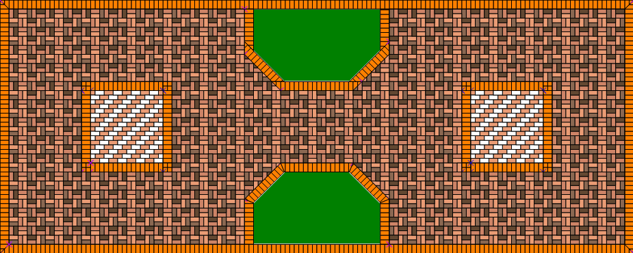

In this lesson you will know how to use the new functionality appeared in version 2.2.
This tutorial DOES NOT explain:
basics of drawing geometric figures - tiles and projects
creation of halves tiles molds
drafting patterns
These aspects are described in the manual, you can read there about them.
Some other basic things will be discussed in as much details as it is necessary to explain the topic.
For further explanations refer to the reference manual.
First of all, let's agree to call "working draft" what you are requested to draw and place.
And what we draw and fill tiles in the program will be called simply "project"
(as previously established in the program).
The main unifying theme of the lesson is "Several projects in one drawing." Start your learning from this point.
Several projects in one drawing
Draft dimensions
Drawing with dialogue
Creating the edgings
Cloning projects
Main space tile filling
Drawing with a mini-display
Custom colors
Filling squares
Final processing of the working draft